Using Self-Organizing Maps with SOMbrero to cluster a numeric dataset
3-doc-numericSOM.Rmd
Using Self-Organizing Maps with SOMbrero to cluster a numeric dataset
Basic package description
To be able to run the SOM algorithm, you have to load the package called SOMbrero. The function used to run it is called trainSOM() and is detailed below.
This documentation only considers the case of numerical data.
Arguments
The trainSOM function has several arguments, but only the first one is required. This argument is x.data which is the dataset used to train the SOM. In this documentation, it is passed to the function as a matrix or a data frame with numeric variables in columns and observations of these variables in rows.
The other arguments are the same as the arguments passed to the initSOM function (they are parameters defining the algorithm, see help(initSOM) for further details).
Outputs
The trainSOM function returns an object of class somRes (see help(trainSOM) for further details on this class).
Graphics
The following table indicates which graphics are available for a numeric SOM.
| Type | Energy | Obs | Prototypes | Add | Super Cluster |
|---|---|---|---|---|---|
| no type | x | ||||
| hitmap | x | x | |||
| color | x | x | x | x2 | |
| lines | x | x | x | x2 | |
| barplot | x | x | x | x2 | |
| radar | x | x | x | x2 | |
| pie | x | x | |||
| boxplot | x | x | x2 | ||
| 3d | x | ||||
| poly.dist | x | x | |||
| umatrix | x | ||||
| smooth.dist | x | ||||
| words | x | ||||
| names | x | x | |||
| graph | x | x | |||
| mds | x | x | |||
| grid.dist | x | ||||
| grid | x | ||||
| dendrogram | x | ||||
| dendro3d | x |
The plots marked by “x2”, in the “Super Cluster” column, are available for both data set variables and additional variables.
First case study: simulated data in \([0,1]^2\)
The first case study show the clustering of points randomly distributed in the square \([0,1]^2\). The data are generated by:
set.seed(4031719)
the.data <- data.frame("x1"=runif(500), "x2"=runif(500))
plot(the.data, pch=19)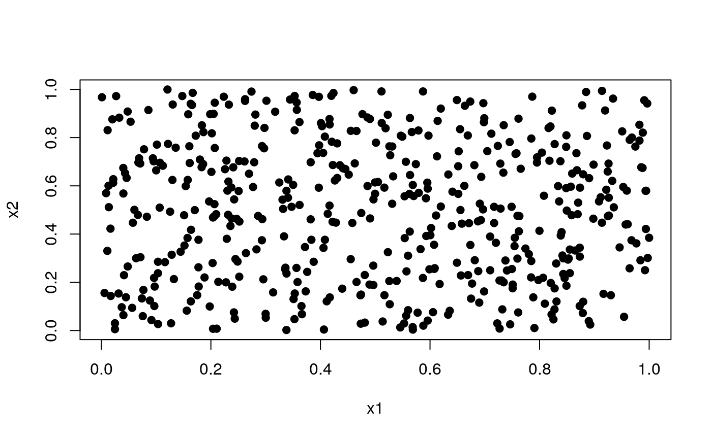
Training the SOM
The numeric SOM algorithm is used to cluster the data:
set.seed(593)
# run the SOM algorithm with 10 intermediate backups and 2000 iterations
my.som <- trainSOM(x.data=the.data, dimension=c(5,5), nb.save=10, maxit=2000,
scaling="none", radius.type="letremy")The energy evolves as described in the following graphic:
plot(my.som, what="energy")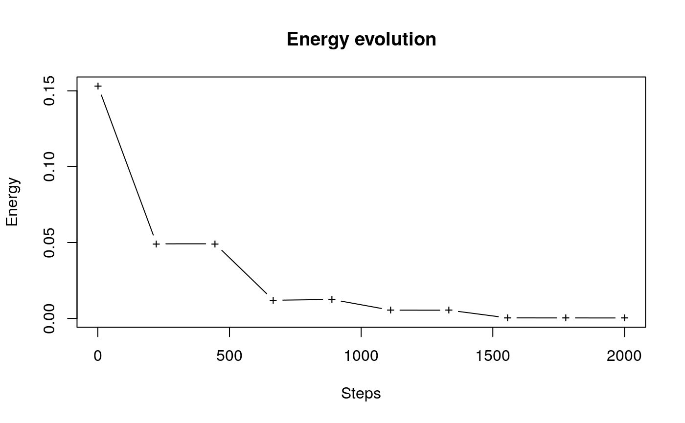
It is stabilized during the last 500 iterations.
Clustering
The resulting clustering distribution can be visualized by the hitmap:
plot(my.som, what="obs", type="hitmap")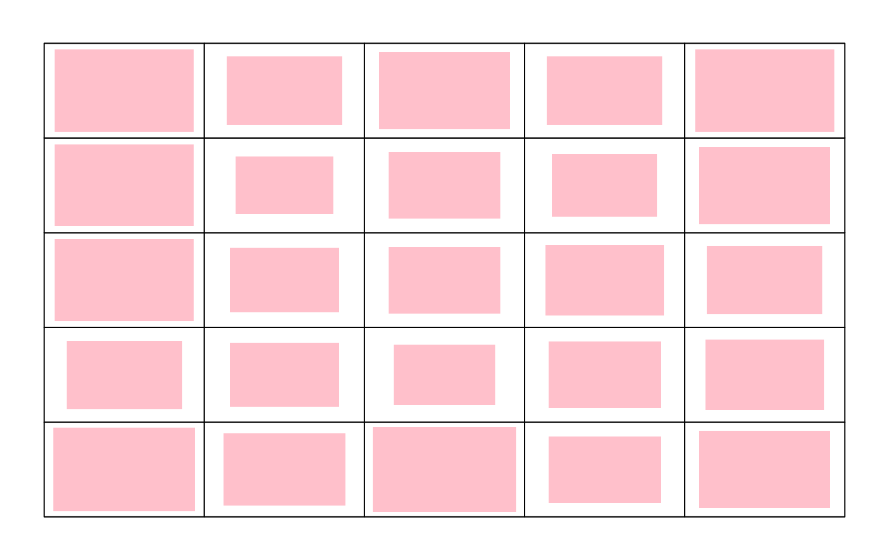
The observations are almost uniformly distributed on the map.
The clustering component allows us to plot the initial data according to the final clustering.
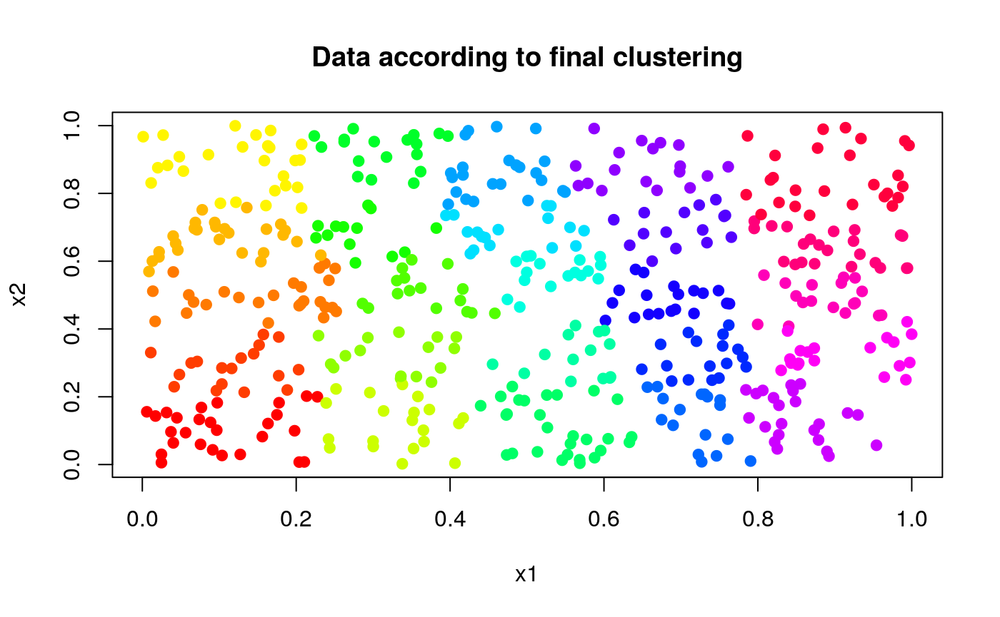
Clustering interpretation
The values of the prototypes can be represented with the plot function and help interpret the clusters:
par(mfrow=c(1,2))
plot(my.som, what="prototypes", type="color", var=1, main="prototypes - x1")
plot(my.som, what="prototypes", type="color", var=2, main="prototypes - x2")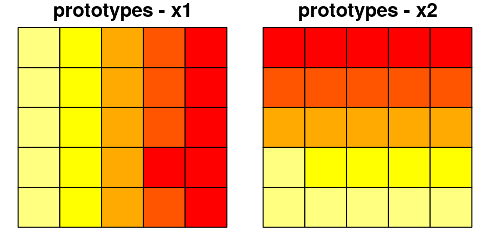
Here, the interpretation is simple enough: high values of the first variables x1 are located at the right side of the map and small values at the left side of the map. Large values of x2 are located at the top of the map, whereas, small values are located at the bottom of the map.
We obtain the same results with a similar plot on the observation mean values:
par(mfrow=c(1,2))
plot(my.som, what="obs", type="color", var=1, main="obs mean values - x1")
plot(my.som, what="obs", type="color", var=2, main="obs mean values - x2")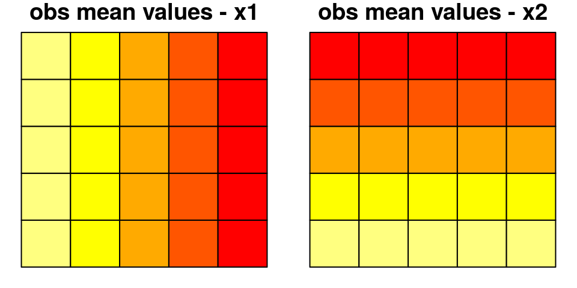
The prototypes coordinates are also registered for each intermediate backup so they can be displayed on different graphics to see the evolution in the prototypes organization. 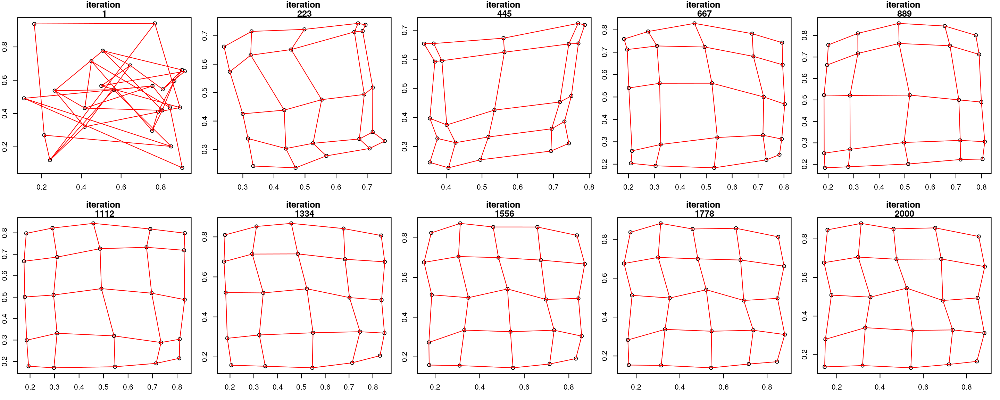
At the begining of the algorithm, the prototypes are randomly distributed in [0,1]^2 and then, they organize as a regular rectangular grid in \([0,1]^2\).
Second case study: the iris dataset
This second case study is performed on the famous (Fisher’s or Anderson’s) iris data set that gives the measurements in centimeters of the variables sepal length and width and petal length and width, respectively, for 50 flowers from each of 3 species of iris (setosa, versicolor, and virginica).
Training the SOM
The first four variables of the data set (that are the numeric variables) are used to map each flower on the SOM grid.
set.seed(255)
# run the SOM algorithm with verbose set to TRUE
iris.som <- trainSOM(x.data=iris[,1:4], verbose=TRUE, nb.save=5)## Self-Organizing Map algorithm...
##
## Parameters of the SOM
##
## SOM mode : online
## SOM type : numeric
## Affectation type : standard
## Grid :
## Self-Organizing Map structure
##
## Features :
## topology : square
## x dimension : 5
## y dimension : 5
## distance type: euclidean
##
## Number of iterations : 750
## Number of intermediate backups : 5
## Initializing prototypes method : random
## Data pre-processing type : unitvar
## Neighbourhood type : gaussian
##
## 0 % done
## 10 % done
## 20 % done
## 30 % done
## 40 % done
## 50 % done
## 60 % done
## 70 % done
## 80 % done
## 90 % done
## 100 % doneiris.som## Self-Organizing Map object...
## online learning, type: numeric
## 5 x 5 grid with square topology
## neighbourhood type: gaussian
## distance type: euclideanAs the energy is registered during the intermediate backups, we can have a look at its evolution.
plot(iris.som, what="energy")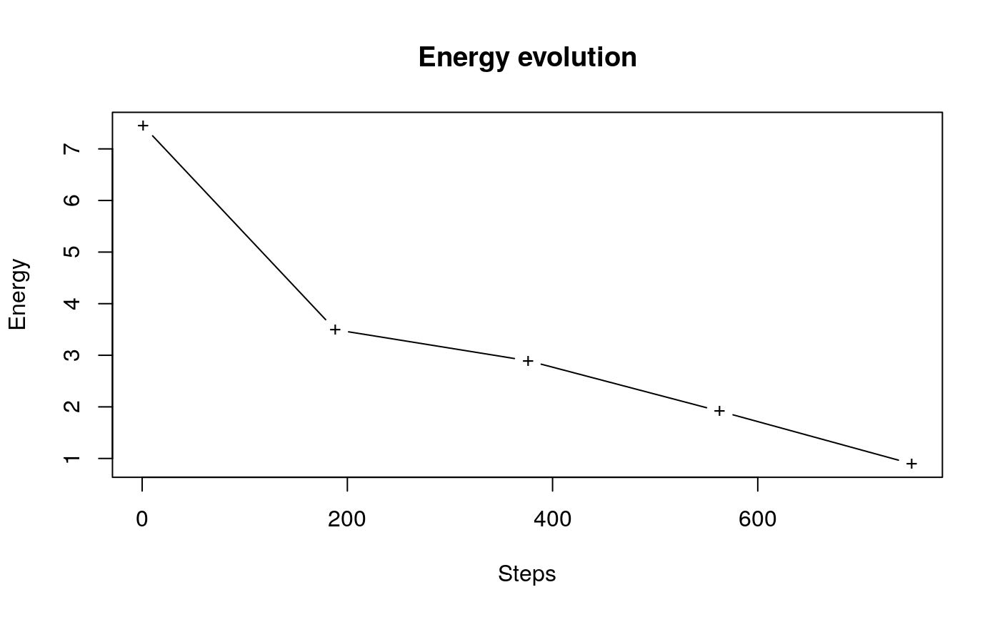
Here the energy does not stabilize as in the case of dist.type="letremy" because the Gaussian annealing of the neighbourhood is continuous and not stepwise.
Resulting clustering
The clustering component contains the final classification of the dataset. It is a vector with length equal to the number of rows of the input dataset.
iris.som$clustering## 1 2 3 4 5 6 7 8 9 10 11 12 13 14 15 16 17 18
## 5 5 5 5 5 5 5 5 5 5 5 5 5 5 5 5 5 5
## 19 20 21 22 23 24 25 26 27 28 29 30 31 32 33 34 35 36
## 5 5 5 5 5 5 5 10 5 5 5 5 5 5 5 5 5 5
## 37 38 39 40 41 42 43 44 45 46 47 48 49 50 51 52 53 54
## 5 5 5 5 5 15 5 5 5 5 5 5 5 5 11 6 11 25
## 55 56 57 58 59 60 61 62 63 64 65 66 67 68 69 70 71 72
## 23 25 6 25 18 25 25 19 25 24 20 6 19 25 24 25 12 24
## 73 74 75 76 77 78 79 80 81 82 83 84 85 86 87 88 89 90
## 24 24 18 6 23 11 24 25 25 25 25 24 19 7 11 24 19 25
## 91 92 93 94 95 96 97 98 99 100 101 102 103 104 105 106 107 108
## 25 18 25 25 25 19 25 24 20 25 21 24 21 23 21 21 25 21
## 109 110 111 112 113 114 115 116 117 118 119 120 121 122 123 124 125 126
## 22 21 11 23 21 24 23 16 22 21 21 24 21 24 21 23 21 21
## 127 128 129 130 131 132 133 134 135 136 137 138 139 140 141 142 143 144
## 23 23 22 21 21 21 22 23 24 21 16 11 18 21 21 21 24 21
## 145 146 147 148 149 150
## 21 21 23 22 16 18table(iris.som$clustering)##
## 5 6 7 10 11 12 15 16 18 19 20 21 22 23 24 25
## 48 4 1 1 6 1 1 3 5 5 2 23 5 10 15 20which can also be visualized by a hitmap plot:
plot(iris.som, what="obs", type="hitmap")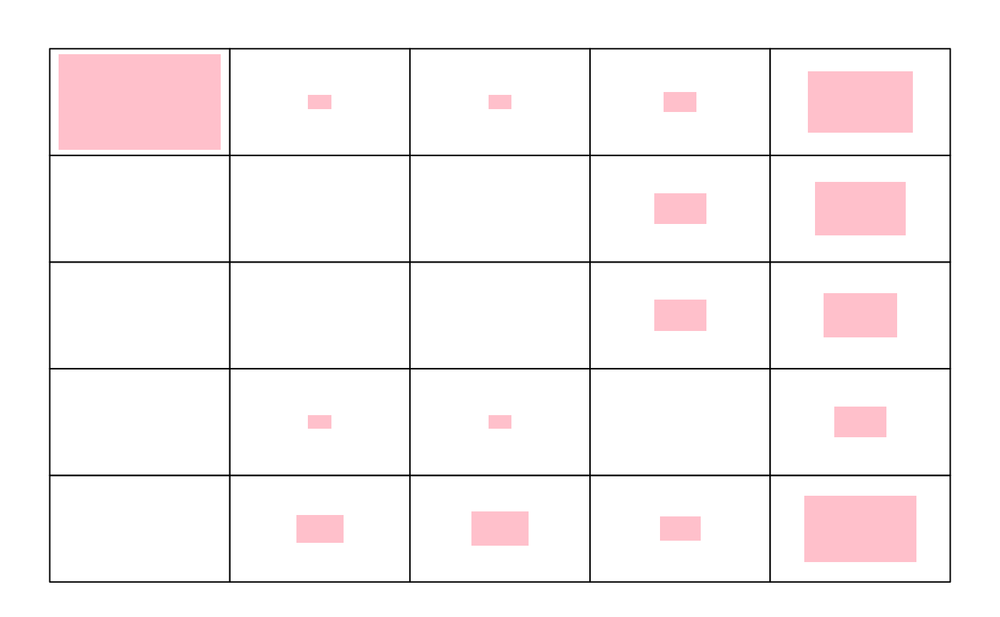
To access the relevance of each explanatory variable in the definition of the clusters, the function summary includes an ANOVA with the factor being the clustering, for each (numeric) input variable.
summary(iris.som)##
## Summary
##
## Class : somRes
##
## Self-Organizing Map object...
## online learning, type: numeric
## 5 x 5 grid with square topology
## neighbourhood type: gaussian
## distance type: euclidean
##
## Final energy : 0.8971201
## Topographic error: 0
##
## ANOVA :
##
## Degrees of freedom : 15
##
## F pvalue significativity
## Sepal.Length 53.911 0 ***
## Sepal.Width 17.020 0 ***
## Petal.Length 306.406 0 ***
## Petal.Width 147.682 0 ***Here, all variables have significantly different means among the different clusters and can thus be considered to be relevant for the clustering definition.
Another useful function is predict.somRes. This function predicts the neuron to which a new observation would be assigned. The first argument must be a somRes object and the second one the new observation. Let us have a try on the first observation of the iris data set:
# call predict.somRes
predict(iris.som, iris[1,1:4])## 5
## 5# check the result of the final clustering with the SOM algorithm
iris.som$clustering[1]## 1
## 5Clustering interpretation
Graphics common to observations and prototypes
NB: in all the following graphics, data are scaled in the preprocessing stage.
Some graphics are shared between observations and prototypes. They allow you to plot the level values, either of the prototypes or of the observation means. In this example these common graphics are plotted for the mean observation values.
par(mfrow=c(2,2))
plot(iris.som, what="obs", type="color", variable=1, print.title=TRUE,
main="Sepal length")
plot(iris.som, what="obs", type="color", variable=2, print.title=TRUE,
main="Sepal width")
plot(iris.som, what="obs", type="color", variable=3, print.title=TRUE,
main="Petal length")
plot(iris.som, what="obs", type="color", variable=4, print.title=TRUE,
main="Petal width")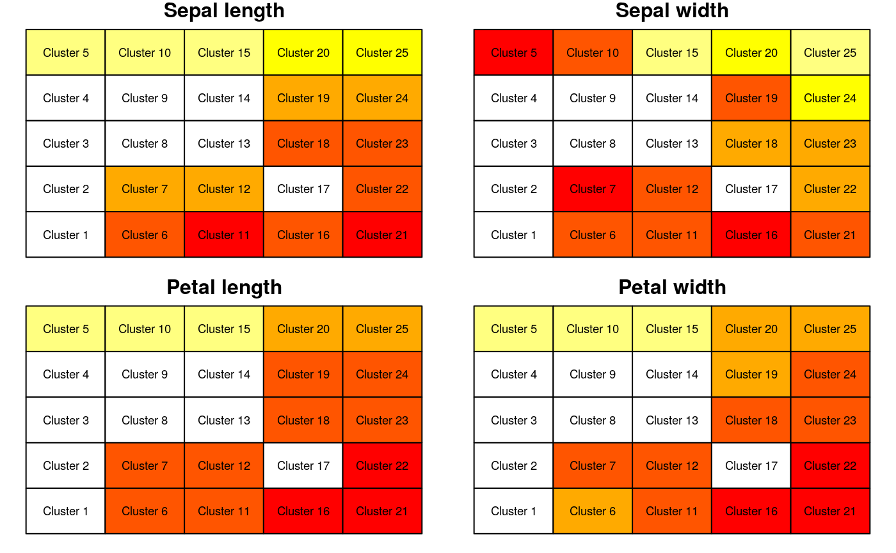
plot(iris.som, what="prototypes", type="lines", print.title=TRUE)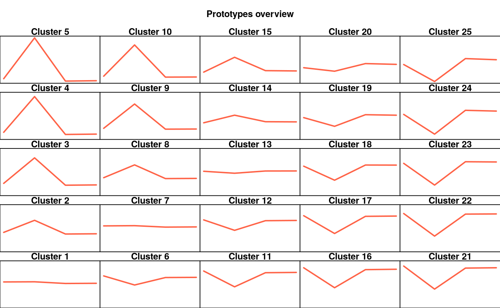
plot(iris.som, what="obs", type="barplot", print.title=TRUE)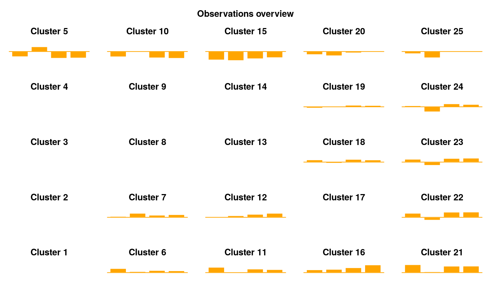
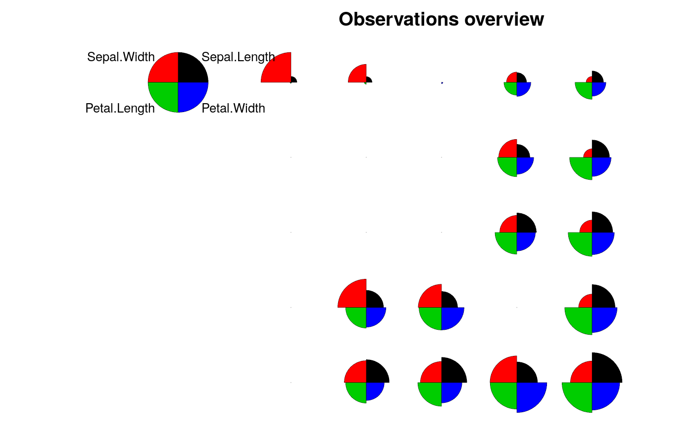
Empty squares catch the attention: none of the observations are assigned to clusters 4, 9, 14 and 19.
Let us analyse the results for cluster 5 more precisely. On the "color" plots, cluster 5 has the following results: high values for Sepal.Width and low values for all the other variables. These results are also noticeable in the other plots:
- on the
"lines"plot, the second point shows a peak; - on the
"barplot"plot, this evolution is observed again; - on the
"radar"plot, the slice corresponding toSepal.Widthis very big whereas the two Petal slices are almost invisible.
Flowers with a long sepal and all the other variables being small are classified in the top left corner of the map. Flowers with large sepals and petals (length and width) are classified in the bottom right corner of the map whereas flowers with small sepal length are classified in the top right corner of the map.
More graphics on observations
plot(iris.som, what="obs", type="boxplot", print.title=TRUE)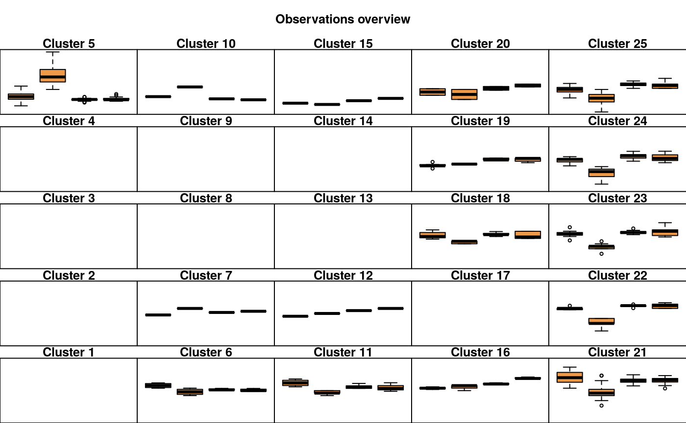
rownames(iris)## [1] "1" "2" "3" "4" "5" "6" "7" "8" "9" "10" "11"
## [12] "12" "13" "14" "15" "16" "17" "18" "19" "20" "21" "22"
## [23] "23" "24" "25" "26" "27" "28" "29" "30" "31" "32" "33"
## [34] "34" "35" "36" "37" "38" "39" "40" "41" "42" "43" "44"
## [45] "45" "46" "47" "48" "49" "50" "51" "52" "53" "54" "55"
## [56] "56" "57" "58" "59" "60" "61" "62" "63" "64" "65" "66"
## [67] "67" "68" "69" "70" "71" "72" "73" "74" "75" "76" "77"
## [78] "78" "79" "80" "81" "82" "83" "84" "85" "86" "87" "88"
## [89] "89" "90" "91" "92" "93" "94" "95" "96" "97" "98" "99"
## [100] "100" "101" "102" "103" "104" "105" "106" "107" "108" "109" "110"
## [111] "111" "112" "113" "114" "115" "116" "117" "118" "119" "120" "121"
## [122] "122" "123" "124" "125" "126" "127" "128" "129" "130" "131" "132"
## [133] "133" "134" "135" "136" "137" "138" "139" "140" "141" "142" "143"
## [144] "144" "145" "146" "147" "148" "149" "150"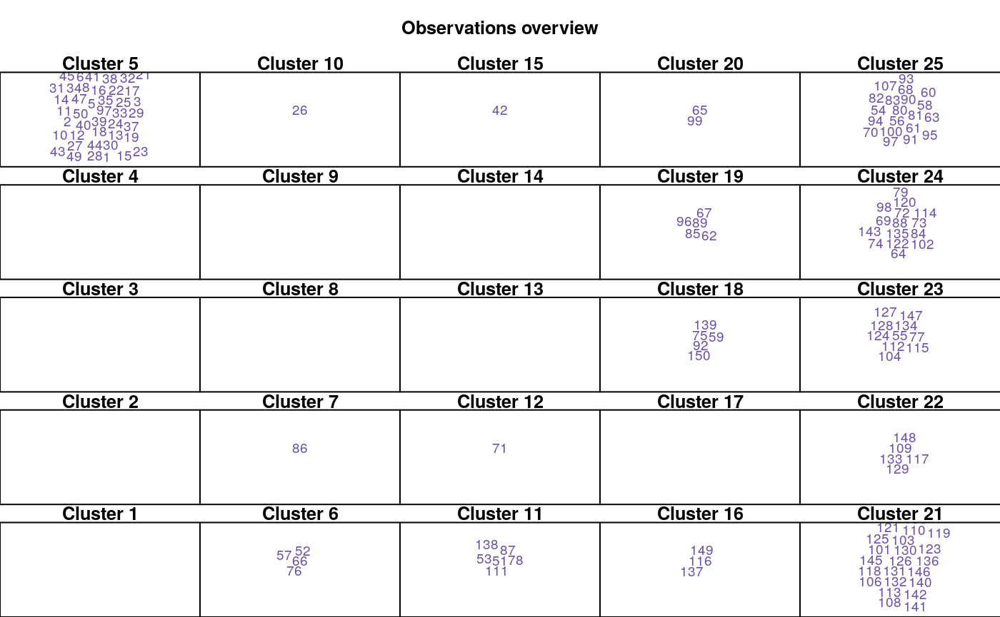
- By default, the
"boxplot"plot considers all numerical variables of the data set. As this example used the four numerical variables of the iris data set, four boxplots are plotted in each neuron. - The
"names"plot prints, for each neuron, the names of the observations which are assigned to its cluster. Here, the row names of iris data set are simply the row numbers.
More graphics on prototypes
Some more graphics handling prototypes have been implemented.
par(mfrow=c(2,2))
plot(iris.som, what="prototypes", type="3d", variable=1, main="Sepal length")
plot(iris.som, what="prototypes", type="3d", variable=2, main="Sepal width")
plot(iris.som, what="prototypes", type="3d", variable=3, main="Petal length")
plot(iris.som, what="prototypes", type="3d", variable=4, main="Petal width")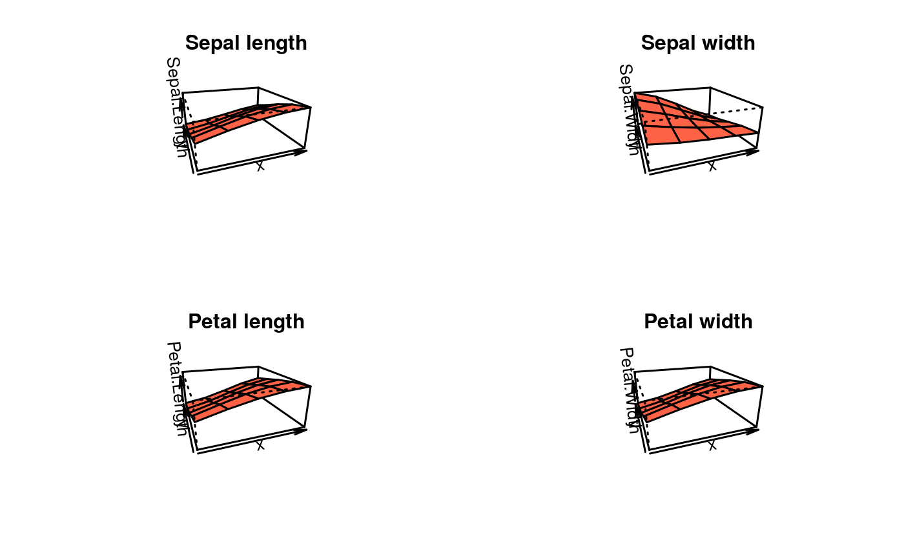
"3d" provides the same results as “color” but in a 3 dimensional graphic: x is the x dimension of the grid, y is the y dimension of the grid and z is the value of the prototype for the variable variable (by name or number in the dataset) of the corresponding neuron.
Also, some graphics are provided to visualize the distance between prototypes on the grid:
plot(iris.som, what="prototypes", type="poly.dist")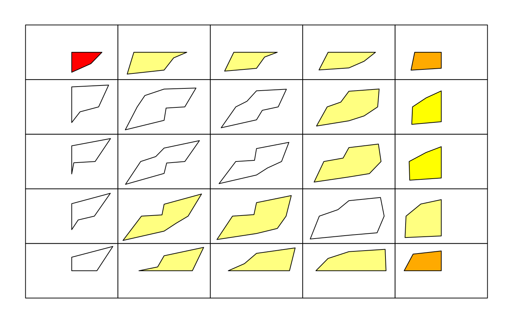
plot(iris.som, what="prototypes", type="umatrix")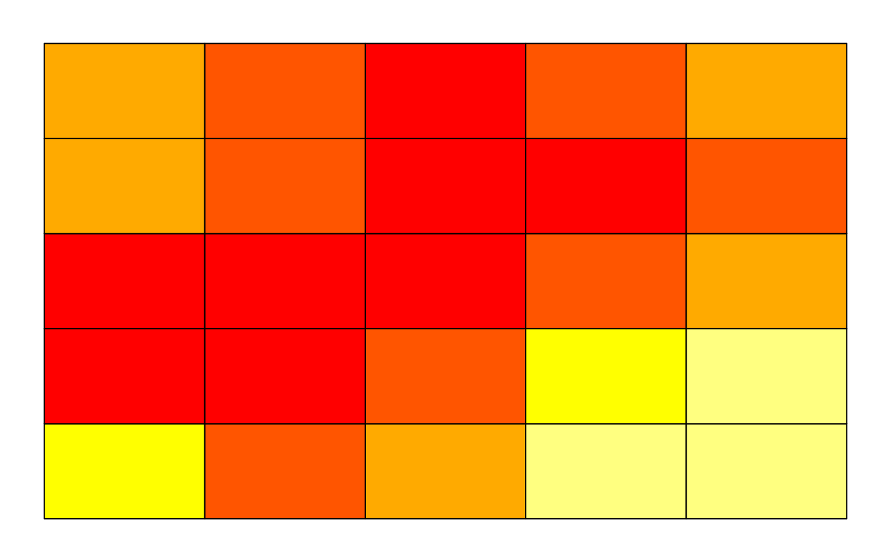
plot(iris.som, what="prototypes", type="smooth.dist")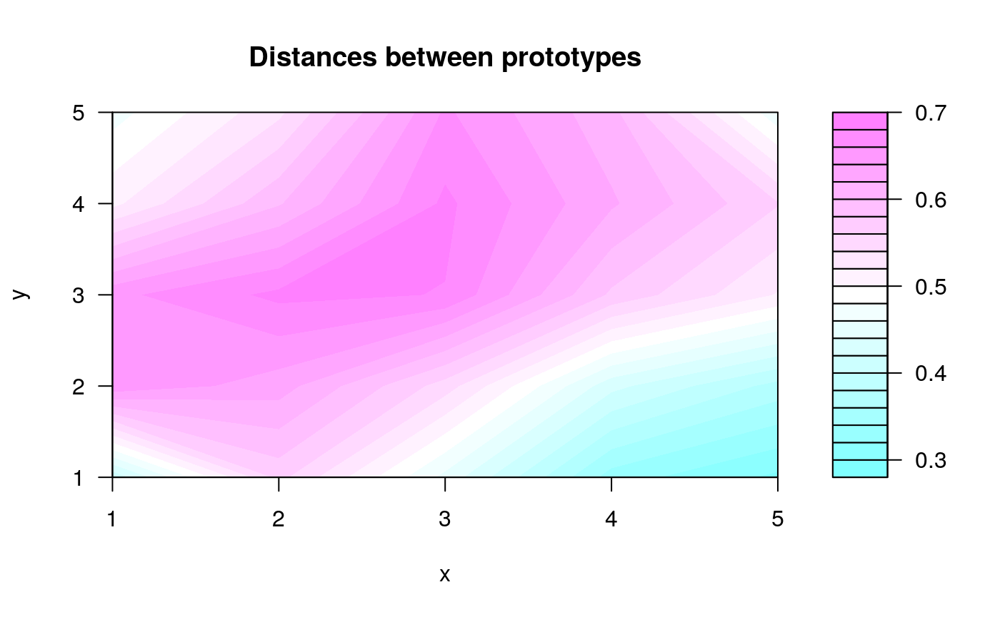
plot(iris.som, what="prototypes", type="mds")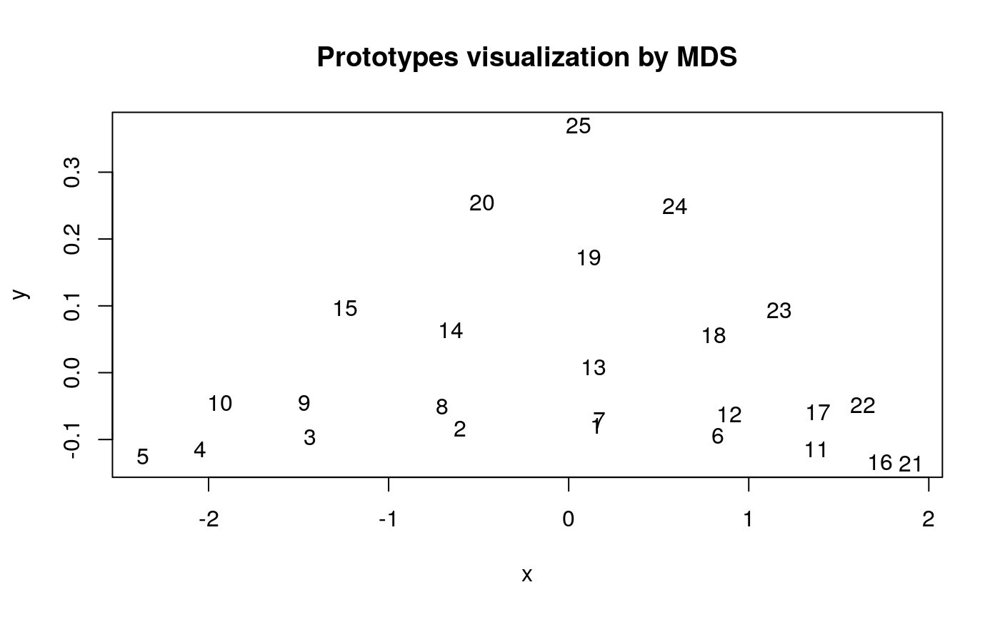
plot(iris.som, what="prototypes", type="grid.dist")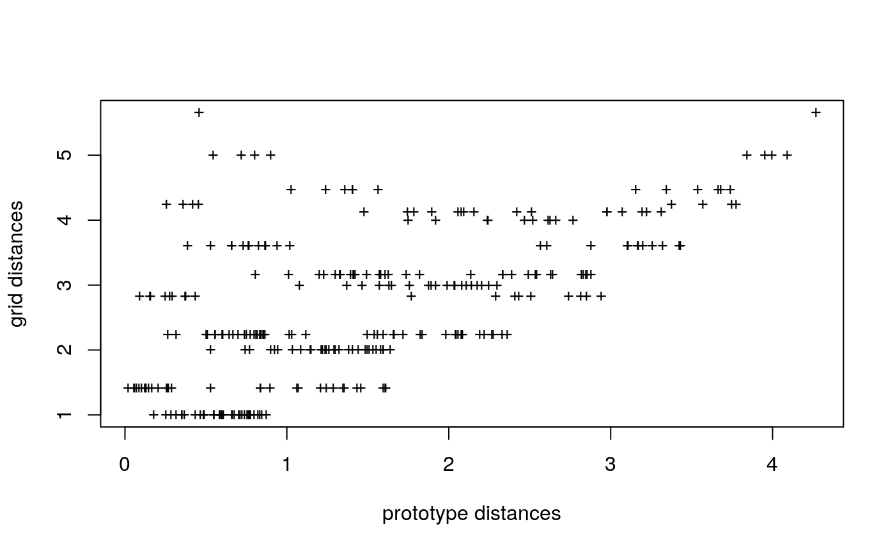
"poly.dist"represents the distances between neighboring prototypes with polygons plotted for each cell of the grid. The smaller the distance between a polygon’s vertex and a cell border, the closer the pair of prototypes. The colors indicates the number of observations in the neuron (white is used for empty neurons);"umatrix"fills the neurons of the grid using colors that represent the average distance between the current prototype and its neighbors;"smooth.dist"plots the mean distance between the current prototype and its neighbors with a color gradation;mdsplots the number of the neuron on a map according to a Multi Dimensional Scaling (MDS) projection;grid.distplots a point for each pair of prototypes, with x coordinates representing the distance between the prototypes in the input space, and y coordinates representing the distance between the corresponding neurons on the grid.
These graphics show that there is a big gap (large distances) in the diagonal that goes from the bottom left part of the map to its top right corner. Hence, for instance, the flowers classified in cluster 15 are rather different from those classified in cluster 20, even if these two clusters are adjacent on the map. This is also emphasized on the MDS plot where clusters 15 and 20 are not very close.
Graphics showing an additional variable
additional factor
Let us plot pies for all neurons according to the flower species of the observations.
class(iris$Species)## [1] "factor"levels(iris$Species)## [1] "setosa" "versicolor" "virginica"plot(iris.som, what="add", type="pie", variable=iris$Species)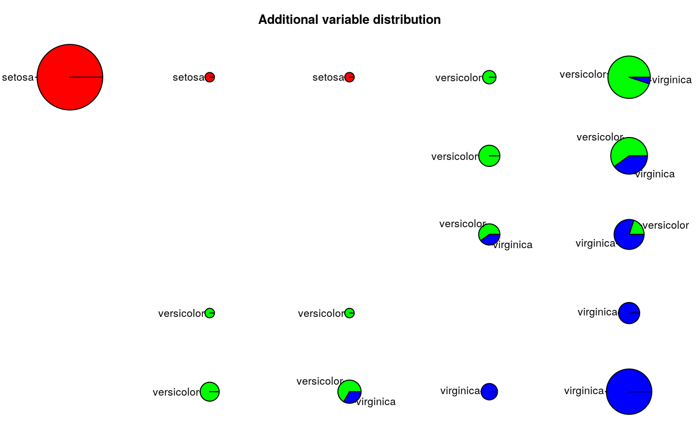
This figure shows that the clustering produced by the SOM is indeed relevant to identify the three different species of iris: they are well separated on the map and almost all clusters only contain one species of iris.
additional numerical vector
The "color" plot available for "add" is similar to the "obs" or "prototypes" cases. Here we choose as an additional variable the first variable of the iris data set, so we obtain the same graphic as above (see section Graphics common to observations and prototypes).
plot(iris.som, what="add", type="color", variable=iris$Sepal.Length)additional numerical matrix or data frame
The "lines", "barplot", "radar" and "boxplot" plots available for "add" are similar to the "obs" or "prototypes" cases.
"words" is only implemented for an additional variable. In this case, the additional variable must be a contingency matrix: the words used on the graph are the names of the colums and the presence or lack of the word is expressed by respectively 1 or 0. The size of the words on the grid depends on the rate of presence in the observations of the current neuron.
# my.cont.mat is the contingency matrix corresponding to the variable
# iris$Species - overview of the 5 first lines:
my.cont.mat[1:5,]## setosa versicolor virginica
## [1,] 1 0 0
## [2,] 1 0 0
## [3,] 1 0 0
## [4,] 1 0 0
## [5,] 1 0 0plot(iris.som, what="add", type="words", variable=my.cont.mat)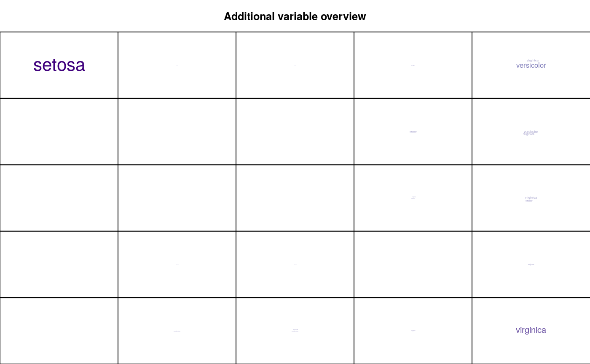
additional non-numerical vector
"names" is similar to the "names" case implemented for "obs". Here we choose to give the argument variable the row names of the iris data set: so we obtain the same graphic as above (see More graphics on observations).
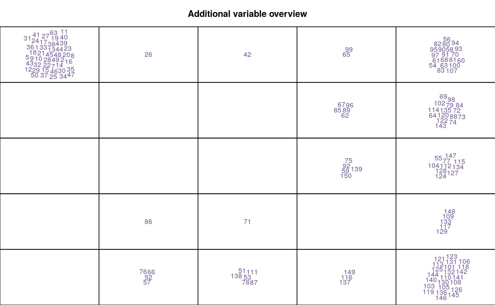
Then, we can try to call this plot again but on the variable iris$Species.
plot(iris.som, what="add", type="names", variable=iris$Species)We obtain exactly the same plot as we obtained above for "words" with the contingency matrix corresponding to the variable iris$Species.
Analyze the projection quality
quality(iris.som)## $topographic
## [1] 0
##
## $quantization
## [1] 0.8798424By default, the quality function calculates both quantization and topographic errors. It is also possible to specify which one you want using the argument quality.type.
The topographic error value varies between 0 (good projection quality) and 1 (poor projection quality). Here, the topographic quality of the mapping is equal to 0.05 which means that all observations have a second best unit which is in the neighborhood of the best matching unit.
The quantization error is an unbounded positive number. The closer it is from 0, the better the projection quality.
Building super classes from the resulting SOM
In the SOM algorithm, the number of clusters is necessarily close to the number of neurons on the grid (not necessarily equal as some neurons may have no observations assigned to them). This - quite large - number may not suit the original data for a clustering purpose.
A usual way to address clustering with SOM is to perform a hierarchical clustering on the prototypes. This clustering is directly available in the package SOMbrero using the function superClass. To do so, you can first have a quick overview to decide on the number of super clusters which suits your data.
plot(superClass(iris.som))## Warning in plot.somSC(superClass(iris.som)): Impossible to plot the rectangles: no super clusters.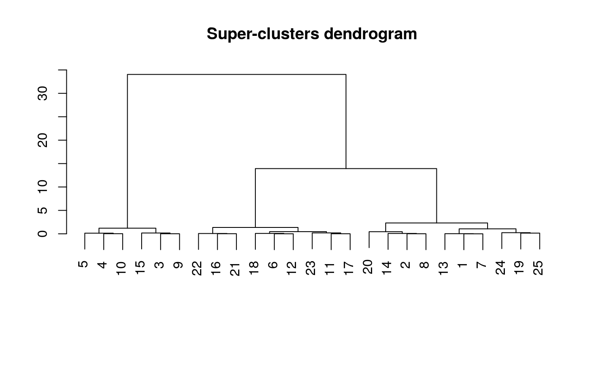
By default, the function plots both a dendrogram and the evolution of the percentage of explained variance. Here, 3 super clusters seem to be the best choice. The output of superClass is a somSC class object. Basic functions have been defined for this class:
my.sc <- superClass(iris.som, k=3)
summary(my.sc)##
## SOM Super Classes
## Initial number of clusters : 25
## Number of super clusters : 3
##
##
## Frequency table
## 1 2 3
## 10 6 9
##
## Clustering
## 1 2 3 4 5 6 7 8 9 10 11 12 13 14 15 16 17 18 19 20 21 22 23 24 25
## 1 1 2 2 2 3 1 1 2 2 3 3 1 1 2 3 3 3 1 1 3 3 3 1 1
##
##
## ANOVA
##
## Degrees of freedom : 2
##
## F pvalue significativity
## Sepal.Length 218.047 0 ***
## Sepal.Width 72.551 0 ***
## Petal.Length 836.146 0 ***
## Petal.Width 542.343 0 ***plot(my.sc, plot.var=FALSE)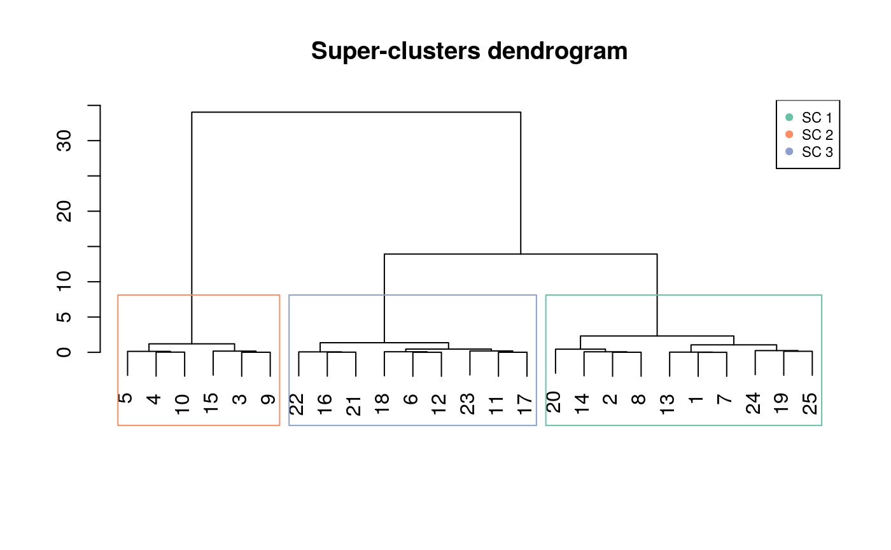
Like plot.somRes, the function plot.somSC has an argument type which offers many different plots and can thus be combined with most of the graphics produced by plot.somSC:
plot(my.sc, type="grid", plot.legend=TRUE)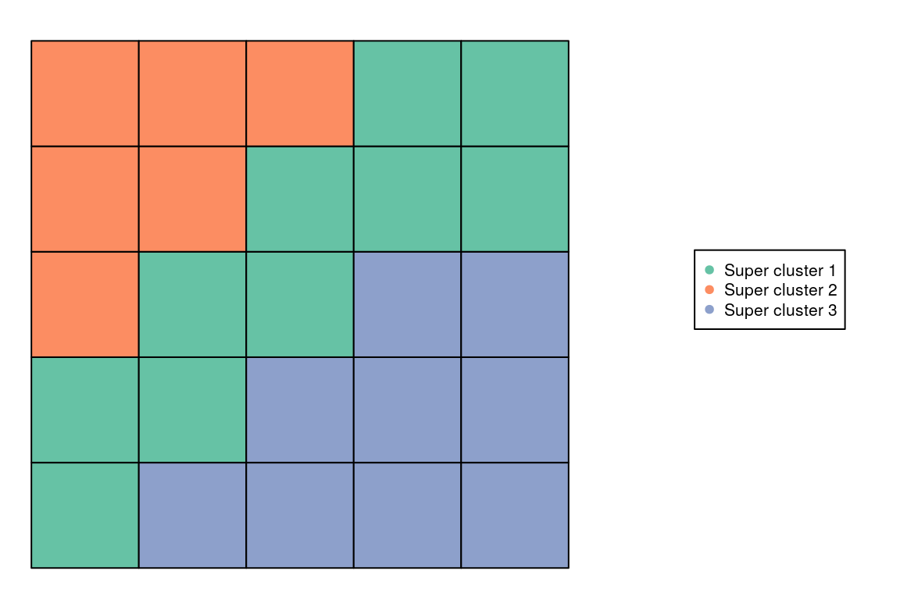
plot(my.sc, type="dendro3d")
Case "grid" fills the grid with colors according to the super clustering (and can provide a legend). Case "dendro3d" plots a 3d dendrogram.
A couple of plots from plot.somRes are also available for the super clustering. Some identify the super clusters with colors:
plot(my.sc, type="hitmap", plot.legend=TRUE)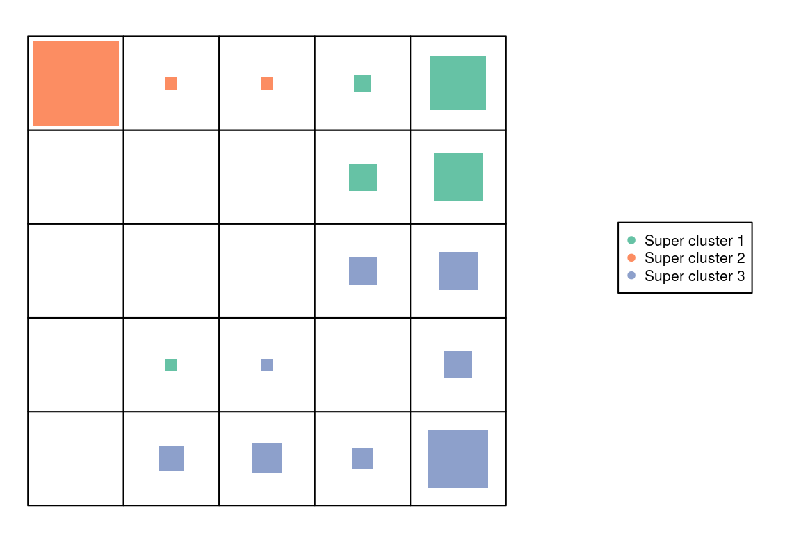
plot(my.sc, type="lines", print.title=TRUE)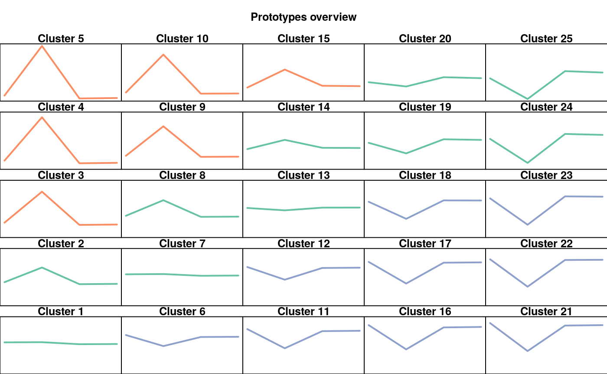
plot(my.sc, type="barplot", print.title=TRUE)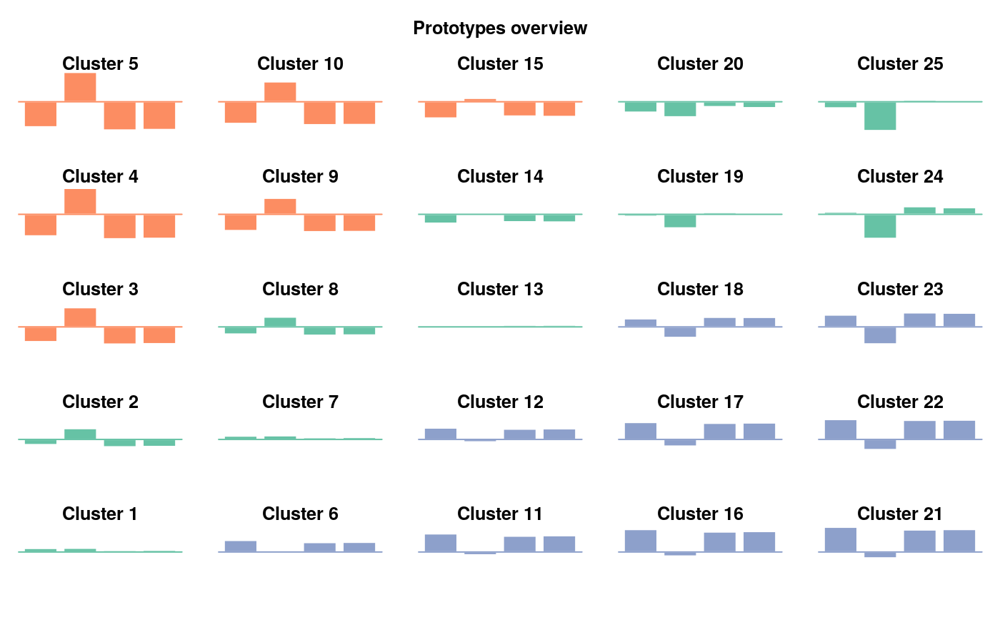
plot(my.sc, type="boxplot", print.title=TRUE)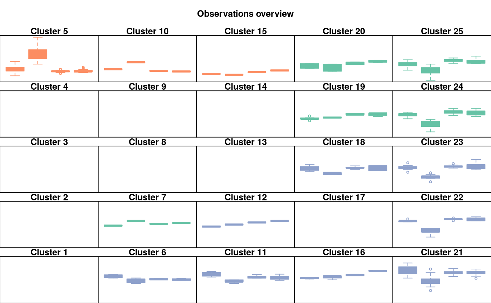
plot(my.sc, type="mds", plot.legend=TRUE, cex =2)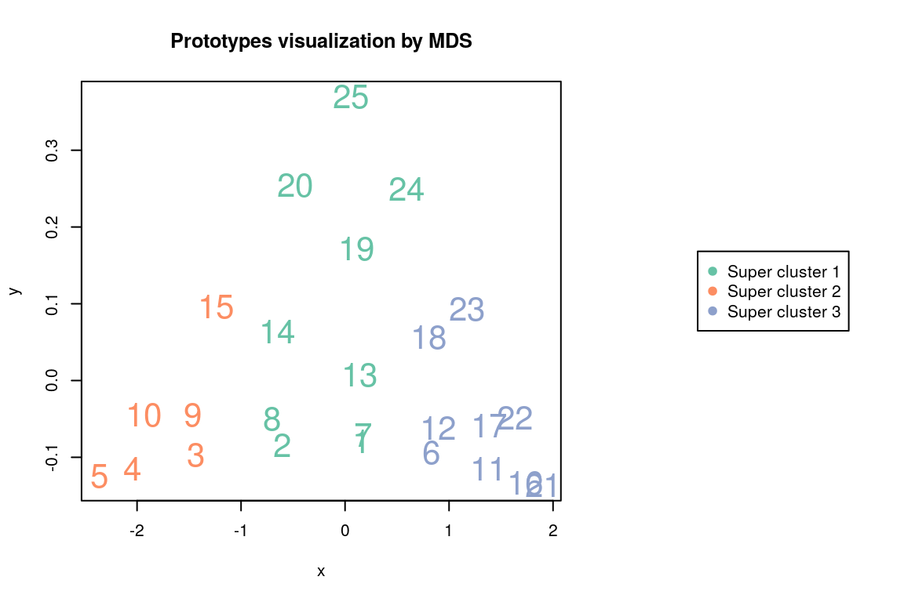
And some others identify the super clusters with titles:
plot(my.sc, type="color")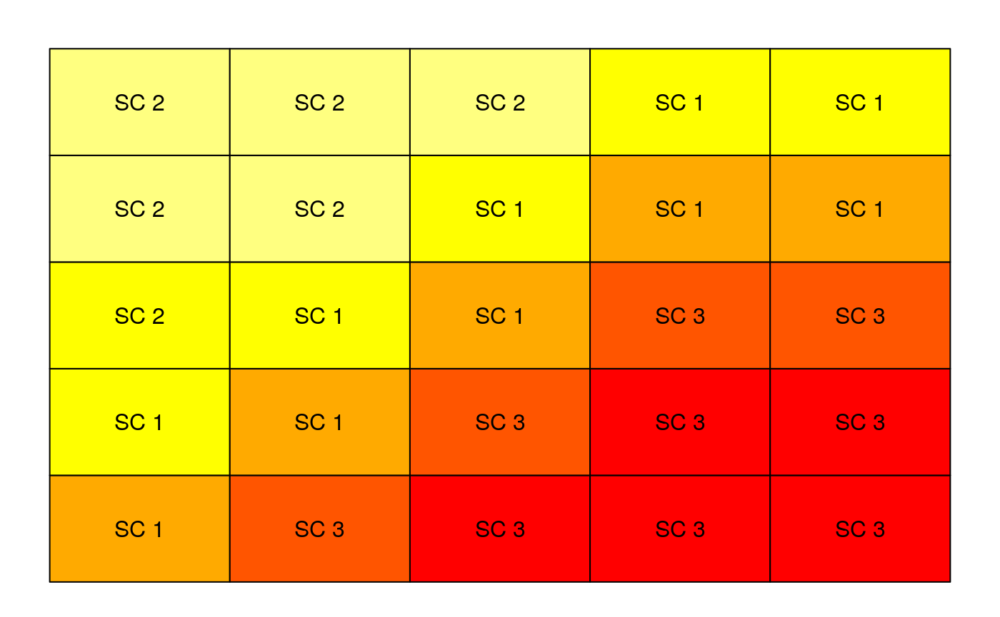
plot(my.sc, type="poly.dist")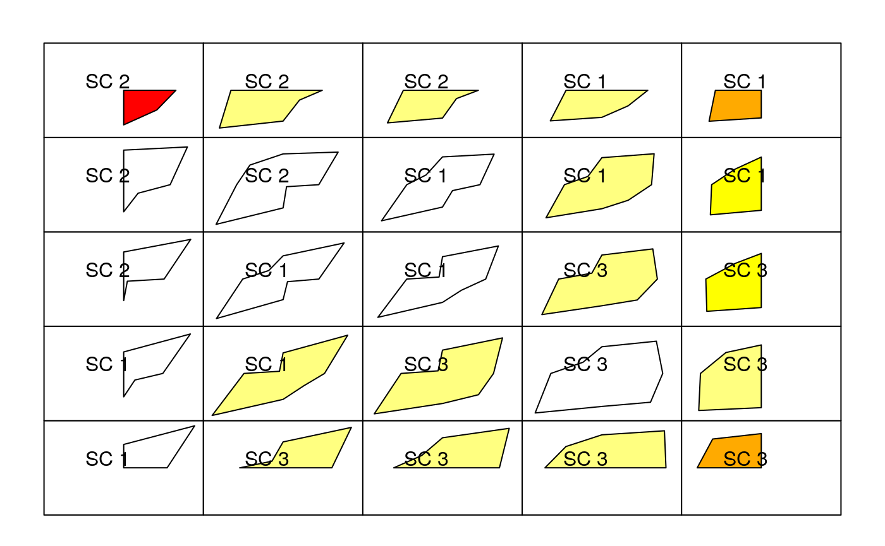
plot(my.sc, type="pie", variable=iris$Species)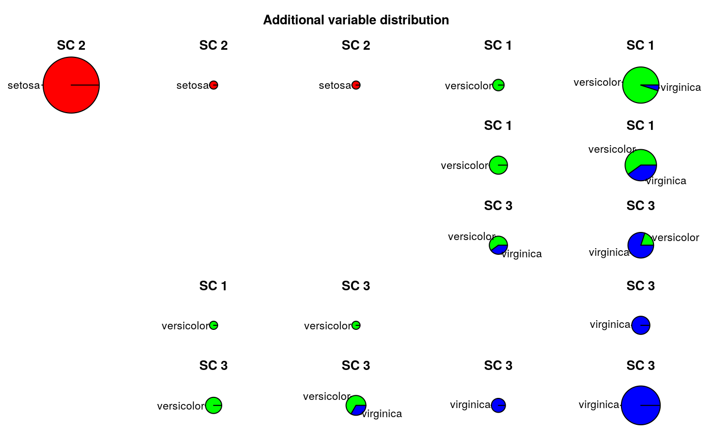
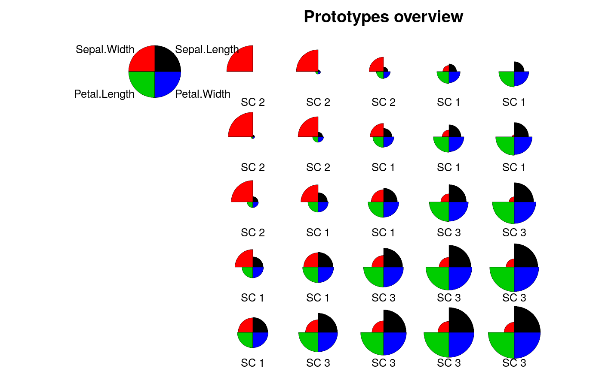
It is also possible to consider an additional variable using the argument add.variable:
plot(my.sc, type="color", add.type=TRUE, variable=iris$Sepal.Length)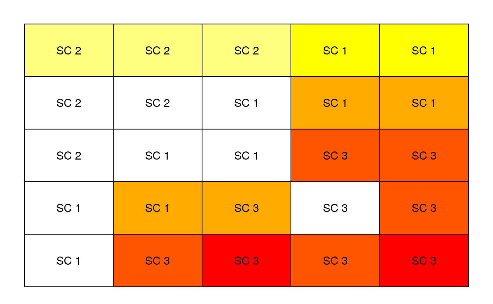
All these graphics help to see that super-cluster number 2 is found in the top right corner of the map and contains only flowers of the “setosa” species. Super cluster number 3, at the bottom right corner of the map, contains mostly flowers of the “virginica” species. The last super-cluster is located at the top right corner of the map and mostly contains flowers of the species “versicolor”.